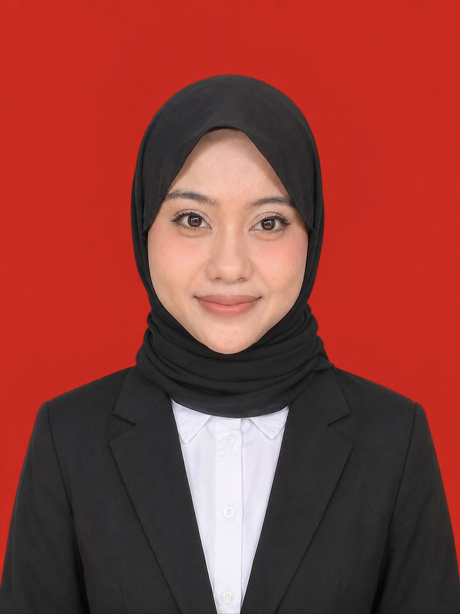

🌸 Hi, I am
Human Resource Management Undergraduate | Aspiring HR Professional
Hubungi Saya
Halo, saya Balqis. Saya merupakan fresh graduate S1 Manajemen dengan minat di bidang Human Resources. Saya adalah pribadi yang bertanggung jawab, adaptif, dan memiliki semangat untuk terus belajar dan berkembang. Saya tertarik untuk membangun karier di bidang SDM, khususnya dalam rekrutmen, pengembangan talenta, pengelolaan karyawan, dan menciptakan lingkungan kerja yang positif. Saya siap menghadapi tantangan baru, mengembangkan kemampuan, serta memberikan kontribusi yang berarti dalam lingkungan kerja profesional.
Program internasional jangka pendek di Indonesia dan Vietnam yang berfokus pada pertukaran budaya dan perspektif ekonomi di Ho Chi Minh City University of Economics and Finance.
Aktif mengikuti komunitas volunteer yang fokus pada pengembangan program sosial dan distribusi bantuan sosial.
Global Youthpreneur 9.0 - Berfokus pada SDGs dalam pendidikan dan pemberdayaan pemuda.
LSP UIN Syarif Hidayatullah Jakarta (Agustus 2026)
Menguasai aspek perencanaan tenaga kerja, penyaringan, wawancara, dan penilaian akhir sesuai standar nasional.
Cisco Networking Academy (Juli 2025)
Pengolahan data dan visualisasi menggunakan Tableau Public.
@csrcuinjkt & @kknbersama_uinjkt
Mengelola konten kreatif, materi publikasi seminar, hari besar, serta dokumentasi kegiatan delegasi.
Blissfuldimsum (@blissfuldimsum)
Mengelola pembuatan konten Instagram, branding produk, promosi visual, dan pengelolaan situs bisnis.
Visualisasi analisis data penjualan dan profit margin produk retail menggunakan Tableau Desktop Public Edition.